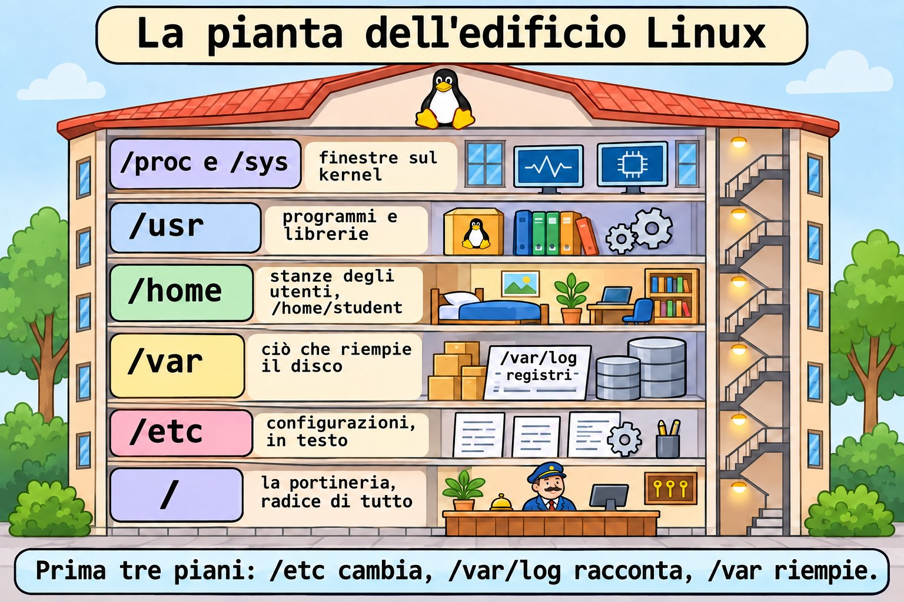
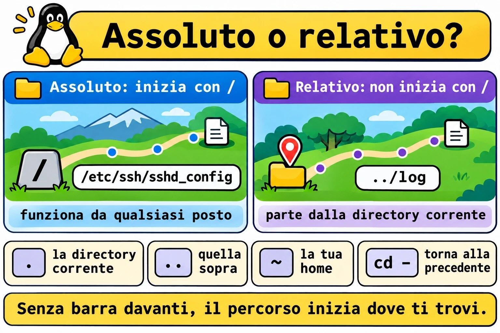
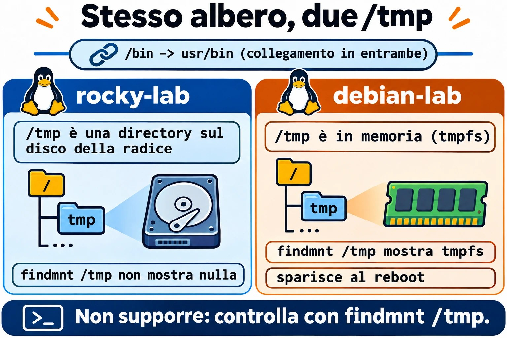
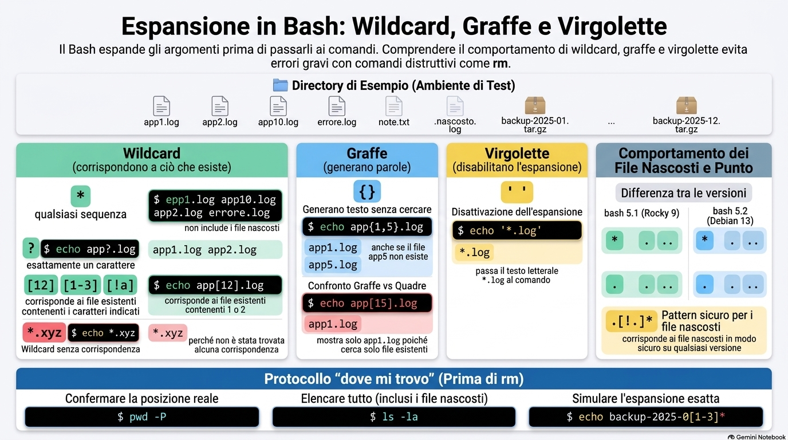
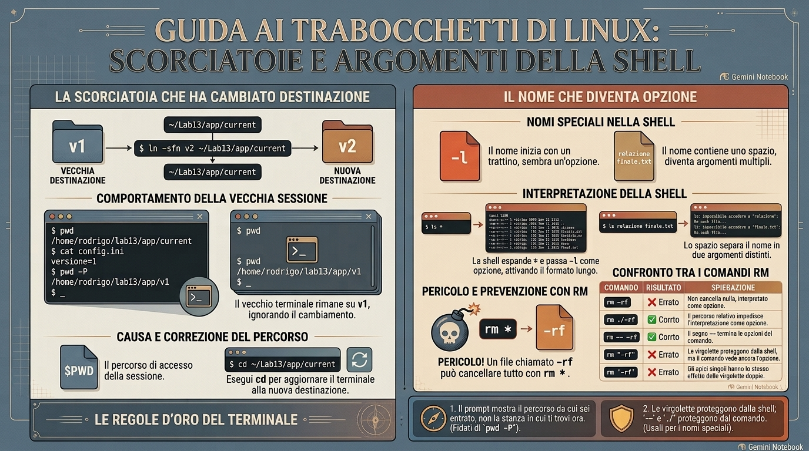

Lezione 1.3 · Percorsi e navigazione
Impari a muoverti nell'albero di Linux senza perderti, a sapere dove vive ogni cosa su un server e a usare i caratteri jolly senza paura, perché prima controlli che cosa prenderanno.
| Scheda | Lezione 1.3 |
|---|---|
| Modulo | M1 · Riga di comando, lezione 3 di 10 |
| Quando | Settimana 2 |
| Alla fine sei in grado di | Arrivare a qualsiasi directory con un percorso assoluto o relativo; dire dove stanno configurazioni, log, programmi e dati su un server; leggere l'output lungo di ls e trovare il file più recente; mostrare i file nascosti; prevedere e controllare un carattere jolly prima di usarlo; accorgerti quando il prompt mostra un percorso che non è più quello reale |
| Prerequisiti | Lezione 1.2 |
| Durata | Circa 2h30 |
| Snapshot | m1a3-inicio e m1a3-fim su entrambe le VM |
1 · Riscaldamento
Tre domande, a memoria, prima di leggere qualsiasi cosa. Scrivi le risposte; le soluzioni le trovi alla fine per controllare.
- Su debian-lab,
sudo cd /var/logrispondesudo: cd: command not found. Perché? - Stai per modificare il
.bashrcdi un server via SSH. Qual è la regola prima di chiudere la sessione? - Prima di un lab che rompe cose, che cosa fai sul nodo Proxmox, e con quale comando?
2 · Perché conta
Lunedì mattina, il monitoraggio avvisa: la root di un server di un cliente è al 97%. Entri via SSH e devi rispondere in pochi minuti a che cosa è cresciuto, dove e da quando. Chi conosce l'albero va dritto in /var, elenca con ls -ltr e trova il log che non smette di crescere. Chi non lo conosce apre directory dopo directory, compresa /proc, dove un file da 128 TB sembra il colpevole e non occupa un byte del disco.
Il secondo caso è più silenzioso. Uno script di backup funziona ogni volta che qualcuno lo lancia a mano e fallisce ogni notte quando gira schedulato. Lo script non è cambiato. Quello che cambia è la directory da cui parte. Un percorso relativo è un'istruzione del tipo «due porte a sinistra», e lo scheduler non parte dalla stessa porta da cui parti tu.
Il terzo finisce in un ripristino di backup: un carattere jolly usato nella directory sbagliata, o che ha preso più nomi di quanti immaginavi. Questa lezione si chiude con due abitudini da dieci secondi che evitano tutti e tre i casi: sapere dove ti trovi davvero e vedere la lista del carattere jolly prima di usarla.
3 · Modello mentale
Il file system è un palazzo con un'unica portineria: la
/.
Ogni file del server sta in una stanza di questo palazzo, e ogni percorso è un modo per arrivarci:
- Il percorso assoluto è l'indirizzo completo, a partire dalla portineria:
/var/log/messages. Funziona da qualsiasi punto del palazzo, come un indirizzo con via, numero e città. - Il percorso relativo è un'istruzione a partire da dove ti trovi: «due porte a sinistra».
log/messagesfunziona solo se sei già in/var. - Quattro scorciatoie da conversazione:
.è «qui»,..è «la stanza di sopra»,~è «la mia stanza» ecd -è «torna dove stavo». - La receptionist della Lezione 1.2 legge anche le targhe. Quando dici «tutti i
.log», è lei che va di porta in porta e compone la lista dei nomi. Il comando riceve la lista già pronta e non vede mai l'*.
Da questa pianta discendono tre conseguenze che userai per tutta la carriera:
- Script e schedulazioni usano percorsi assoluti. Nessuno garantisce in che stanza si sveglia uno script.
- Prima di qualsiasi comando che cancella o cambia qualcosa in massa, controlli dove sei. Un percorso relativo giusto nella stanza sbagliata è il disastro classico.
- Il carattere jolly viene tradotto dalla shell prima che il comando parta, quindi la traduzione si può vedere prima:
echocon lo stesso carattere jolly mostra la lista esatta.
La pianta del palazzo, con ciò che vive a ogni piano:
/ a portaria: a raiz de tudo
├── etc configurações, em texto
├── var o que muda com o uso
│ ├── log registros dos serviços
│ ├── lib dados de serviços: bancos, pacotes
│ └── tmp temporários que sobrevivem ao boot
├── home as salas dos usuários
│ └── student a sua: ~
├── root a sala do root
├── tmp temporários de curta duração
├── usr programas e bibliotecas da distribuição
│ ├── bin programas: /bin aponta para cá
│ └── share manuais e documentação
├── opt software de terceiros, instalado à parte
├── srv dados que o servidor publica: sites, arquivos
├── mnt media pontos de montagem de outros discos
├── dev dispositivos: discos, terminais
└── proc sys janelas para o kernel; não ocupam discoTieni a mente tre piani prima degli altri: /etc è dove cambi il comportamento del sistema, /var/log è dove scopri che cosa è successo e /var per intero è ciò che riempie il disco.


Ponte Windows. In Windows, ogni disco è un albero separato (C:\, D:\). In Linux c'è un albero solo: un altro disco compare come una directory in più al suo interno, in un punto di montaggio come /mnt o /srv. Il separatore è /, e le maiuscole contano: Relatorio.txt e relatorio.txt sono due file diversi. E la differenza che inganna di più: in cmd.exe, a interpretare l'* di dir *.log è dir stesso. In Linux, la shell sostituisce il carattere jolly con i nomi prima, e ls non sa nemmeno che c'era un carattere jolly.
4 · Concetto a livelli
Essenziale
| Termine | Che cos'è | Esempio |
|---|---|---|
| Root | La directory da cui parte tutto l'albero | / |
| Directory corrente | La stanza in cui ti trovi adesso; i percorsi relativi partono da lì | pwd |
| Percorso assoluto | Comincia con / e funziona da qualsiasi punto | /etc/ssh/sshd_config |
| Percorso relativo | Non comincia con /; parte dalla directory corrente | ../log |
. e .. | La directory corrente e quella di sopra | cd .. |
~ | La tua home; ~ana è la home dell'utente ana | cd ~ |
cd - | Torna alla directory precedente e mostra qual è | cd - |
| File nascosto | Qualsiasi nome che comincia con un punto; ls lo mostra solo con -a | .bashrc |
| Carattere jolly | Un modello che la shell sostituisce con i nomi esistenti | *.log, app?.log |
| Espansione con le graffe | Genera parole, esistano o no i file | app{1,2}.log |
| Link simbolico | Una scorciatoia che punta a un altro percorso; ls -l mostra la freccia | /bin -> usr/bin |
| FHS | Lo standard che dice che cosa va in ogni directory | man 7 hier |
I caratteri jolly stanno in quattro righe:
*: qualsiasi sequenza di caratteri, anche nessuna. Non prende i nomi che cominciano con un punto.?: esattamente un carattere.[12]e[1-3]: un carattere dell'elenco o dell'intervallo.[!a]: qualsiasi carattere tranne quello.- Se nessun nome corrisponde, il carattere jolly resta come testo, e il comando riceve l'
*grezzo.
E l'ls di ogni giorno: -l formato lungo, -a con i nascosti, -A con i nascosti meno . e .., -h dimensioni leggibili, -t per data, -r ordine inverso, -d la directory stessa e non il contenuto, -R ricorsivo.
Ponte Windows
| In Windows | In Linux |
|---|---|
C:\Users\student | /home/student, o ~ |
cd senza argomento, che mostra dove sei | pwd. In Linux, cd da solo porta alla home. |
dir /a | ls -la |
dir /od | ls -ltr |
tree | tree, che va installato |
| Attributo nascosto | Nome che comincia con un punto |
C:, D:, un albero per disco | Un albero solo; gli altri dischi vengono montati in directory |
\ | / |
%USERPROFILE% | $HOME |
Approfondimento
La shell espande, il comando riceve. In ls *.log, a cercare i nomi è bash. ls riceve app1.log app2.log erro.log come se li avessi digitati uno per uno. echo riceve la stessa lista e si limita a stamparla. Per questo echo è la prova generale di qualsiasi carattere jolly.
Il carattere jolly senza corrispondenza passa grezzo. Se nessun nome corrisponde, bash consegna il testo del carattere jolly così com'è: ls *.xyz risponde ls: cannot access '*.xyz': No such file or directory. Il messaggio è di ls, che cerca un file chiamato letteralmente *.xyz.
Le virgolette spengono l'espansione. '*.log' arriva al comando come testo. È così che passi un modello a un programma che fa la propria ricerca, come find, che compare più avanti nel corso.
Le graffe non sono caratteri jolly. {a,b} e {01..12} generano parole prima di qualsiasi ricerca, esistano o no i file. echo app{1,5}.log mostra app5.log anche se non esiste. echo app[15].log mostra solo ciò che esiste.
Il punto nasconde, non protegge. Nascosto è solo una convenzione sul nome per non sporcare l'elenco. Chiunque abbia il permesso di lettura vede i nascosti con ls -a. La protezione sono i permessi, che hanno una lezione tutta loro più avanti.
Il .* cambia con la versione di bash. Fino a bash 5.1, quello di Rocky 9, .* corrisponde anche a . e ... Da 5.2 in poi, quello di Debian 13, non corrisponde più, per via dell'opzione globskipdots. Con un bash vecchio, un chown -R student .* sale alla directory di sopra e cambia il proprietario di tutto ciò che c'è lì. Il modello che funziona in entrambi è .[!.]*.
Il prompt mostra il percorso da cui sei entrato. Bash conserva in $PWD il percorso che hai digitato, con le scorciatoie. Se una scorciatoia cambia destinazione dopo, resti nella stanza vecchia e il prompt non se ne accorge. pwd -P chiede al sistema qual è la directory reale.
/bin ora è una scorciatoia. Su Rocky e Debian attuali, /bin, /sbin e /lib sono link simbolici verso /usr/bin, /usr/sbin e /usr/lib. I tutorial vecchi li trattano come directory separate; il risultato è lo stesso.
/proc e /sys non sono sul disco. Sono finestre che il kernel apre in memoria. ls -lh /proc/kcore mostra una dimensione assurda, come 128T, e quel file non occupa un byte del disco.
5 · Rocky × Debian
L'albero segue lo stesso standard su entrambe le VM, ma i dettagli cambiano. Sono quelli che ti fregano sul server del cliente:
| rocky-lab | debian-lab | |
|---|---|---|
/bin, /sbin, /lib | Collegamenti a /usr/bin, /usr/sbin e /usr/lib | Uguali: collegamenti a /usr |
/tmp | Directory sul disco della root | In memoria (tmpfs) nelle installazioni nuove di Debian 13: sparisce al reboot. Verifica nel Passo 4. |
| Pulizia dei temporanei | /tmp dopo 10 giorni, /var/tmp dopo 30 | Uguale, nelle installazioni nuove di Debian 13 |
| Log di sistema | /var/log/messages, /var/log/secure e altri file di testo | Senza messages: da Debian 12, la maggior parte sta nel journal, in /var/log/journal |
Punto dopo i permessi in ls -l | Compare: il file ha un contesto SELinux | Non compare |
ls colorato | Alias in /etc/profile.d/colorls.sh | Alias in ~/.bashrc |
bash e il .* | bash 5.1: .* corrisponde anche a . e .. | bash 5.2: non corrisponde |
tree | Assente dall'installazione minimale | Assente dall'installazione minimale |
| Manuale dell'FHS | man 7 hier, dal pacchetto man-pages installato nella 1.2 | man 7 hier, dal pacchetto manpages |


6 · Lab guidato
Apri tre terminali: uno su rocky-lab (ssh rocky-lab), uno su debian-lab (ssh debian-lab) e uno sul nodo Proxmox, per gli snapshot. A ogni passo, esegui, confronta con l'output atteso e solo dopo leggi il Decidi. Gli output sono estratti; numeri e date sul tuo schermo saranno diversi.
Ogni Decidi è un caso reale di lavoro. Scegli la lettera prima di guardare la tabella: sbagliare qui, con la spiegazione accanto, è il modo più economico di sbagliare.
Passo 1 · Snapshot prima di tutto. Sul nodo Proxmox:
qm snapshot 201 m1a3-inicio --description "Aula 1.3, antes do lab"
qm snapshot 202 m1a3-inicio --description "Aula 1.3, antes do lab"
qm listsnapshot 201Output atteso: l'albero termina con m1a2-fim, m1a3-inicio e, per ultimo, current.
Passo 2 · Dove sono? Prima di eseguire, scommetti: dove va un cd senza niente dopo? Su entrambe le VM:
pwd
cd /var/log
pwd
cd
pwd
cd -
cd ..
pwd
cd ~rootQualcosa come:
/home/student
/var/log
/home/student
/var/log
/var
-bash: cd: /root: Permission deniedcd da solo torna alla home. cd - alterna tra le ultime due directory e stampa dove è andato. .. sale di un livello. L'ultima riga è la receptionist al lavoro: la shell ha tradotto ~root in /root, cd ha provato a entrare e il sistema ha negato, perché la home di root è chiusa agli utenti normali.
Decidi 1 · Lo script che funziona solo a mano. Scenario: lo script di backup di un cliente funziona ogni volta che entri in /opt/backup e lanci ./backup.sh. Schedulato in cron per le 2:00, fallisce ogni notte con tar: lista.txt: Cannot open: No such file or directory. Che cosa fai?
- A) Dai permessi totali allo script e alla lista con
chmod 777. - B) Nello script, sostituisci
lista.txtcon/opt/backup/lista.txt, oppure metticd /opt/backup || exit 1subito all'inizio. - C) Schedula lo script come root.
- D) Aggiungi
/opt/backupal PATH.
Scegli un'opzione prima di continuare.
| Se hai scelto | Risultato | Perché |
|---|---|---|
| A | ❌ Sbagliato | Il messaggio dice No such file or directory, non Permission denied. E 777 apre il backup del cliente a qualsiasi utente del server. |
| B | ✅ Giusto | Cron fa partire lo script nella home dell'utente, non in /opt/backup. Un percorso relativo viene cercato a partire dalla directory corrente, quindi tar cerca lista.txt nel posto sbagliato. Con un percorso assoluto, o con il cd all'inizio, lo script trova la lista da qualsiasi punto. Il || exit 1 ferma lo script se cd fallisce. |
| C | ❌ Sbagliato | Anche root parte dalla sua home, /root. lista.txt continua a non esserci. |
| D | ❌ Sbagliato | Il PATH serve a trovare i comandi, non i file che un comando apre. tar non guarda mai il PATH per trovare lista.txt. |
Da ricordare: il percorso relativo è «due porte a sinistra». Funziona solo se chi legge sa da dove è partito, e uno script schedulato si sveglia senza saperlo.
Passo 3 · Assoluto o relativo? Prima di eseguire, scommetti: stando in /var/log, quali di queste righe funzionano? Su entrambe le VM:
cd /var/log
ls ../lib
ls lib
ls /etc/ssh
ls ../../etc/hostname
realpath ../../etcQualcosa come:
alternatives dnf NetworkManager rpm selinux systemd ...
ls: cannot access 'lib': No such file or directory
moduli ssh_config ssh_config.d sshd_config sshd_config.d ...
../../etc/hostname
/etcSu debian-lab, la prima riga mostra apt, dpkg e systemd, tra gli altri. ../lib funziona perché sale a /var ed entra in lib. lib da solo cerca un lib dentro /var/log, e non esiste. /etc/ssh funziona da qualsiasi punto. realpath traduce un percorso relativo in assoluto: usalo prima di incollare un percorso in uno script.
Decidi 2 · Il tutorial incollato. Scenario: un tutorial ti dice di eseguire cd etc/nginx. Sei nella tua home, incolli la riga e ricevi No such file or directory. nginx è installato e funziona. Che cosa fai?
- A) Reinstalli nginx, perché manca la configurazione.
- B) Esegui
cd /etc/nginx. Il tutorial ha dimenticato la barra, o ha dato per scontato che fossi in/. - C) Esegui
sudo cd etc/nginx. - D) Crei la directory con
mkdir -p etc/nginxed entri.
Scegli un'opzione prima di continuare.
| Se hai scelto | Risultato | Perché |
|---|---|---|
| A | ❌ Sbagliato | La configurazione c'è. cd ha cercato etc/nginx dentro la tua home, dove non esiste. |
| B | ✅ Giusto | Senza barra davanti, il percorso parte dalla directory corrente. Con la barra, parte dalla root e arriva a /etc/nginx da qualsiasi punto tu sia. |
| C | ❌ Sbagliato | Doppio errore: cd è un builtin e sudo non lo trova, come hai visto nella Lezione 1.2. E il percorso resterebbe relativo. |
| D | ❌ Sbagliato | Crei un ~/etc/nginx vuoto e cominci a modificare file che nginx non legge mai. È il tipo di errore che si mangia un pomeriggio. |
Da ricordare: senza barra davanti, il percorso comincia da dove sei.
Passo 4 · La pianta del palazzo. Su entrambe le VM:
ls /
ls -ld /bin /sbin /lib
findmnt /tmp
man 7 hierls -ld mostra qualcosa come:
lrwxrwxrwx. 1 root root 7 Feb 10 2025 /bin -> usr/bin
lrwxrwxrwx. 1 root root 7 Feb 10 2025 /lib -> usr/lib
lrwxrwxrwx. 1 root root 8 Feb 10 2025 /sbin -> usr/sbinLa l all'inizio e la freccia dicono che sono scorciatoie. Il punto dopo i permessi compare solo su rocky-lab: il file ha un contesto SELinux, argomento del modulo sulla sicurezza.
findmnt /tmp non mostra nulla su rocky-lab: lì, /tmp è una directory normale sul disco della root. Su debian-lab, qualcosa come:
TARGET SOURCE FSTYPE OPTIONS
/tmp tmpfs tmpfs rw,nosuid,nodev,size=.../tmp di debian-lab sta in memoria e si svuota a ogni reboot. Se non compare nulla, la tua installazione è stata configurata in un altro modo; ciò che conta è saper controllare.
In man 7 hier, digita /log e Invio; n passa all'occorrenza successiva. Leggi che cosa dice lo standard su /var/log, /opt e /srv. Esci con q.
Decidi 3 · Il disco pieno. Scenario: il monitoraggio avvisa che la root di un server di un cliente è al 98%. Da dove cominci a cercare?
- A) Da
/usr/bin, dove stanno i programmi. - B) Da
/var, dove stanno log, cache dei pacchetti, database e code di posta. - C) Da
/proc, perchéls -lh /proc/kcoremostra un file da 128T. - D) Da
/etc, dove stanno le configurazioni.
Scegli un'opzione prima di continuare.
| Se hai scelto | Risultato | Perché |
|---|---|---|
| A | ❌ Sbagliato | I programmi cambiano solo quando un pacchetto viene installato o aggiornato. E cancellare qualcosa lì rompe il sistema. |
| B | ✅ Giusto | /var è il piano che cresce da solo con l'uso: log che nessuno ruota, cache di dnf o apt, database, coda di posta bloccata. È lì che si trova la maggior parte dei dischi pieni. /home e /tmp vengono subito dopo. |
| C | ❌ Sbagliato | /proc non è sul disco. La dimensione di kcore è lo spazio di memoria che il kernel vede, non byte scritti. |
| D | ❌ Sbagliato | Sono piccoli file di testo. L'intera /etc di solito ha pochi megabyte. |
Da ricordare: /usr è lo scaffale, che cambia solo quando arriva un libro nuovo. /var è la scrivania di lavoro, che accumula carta ogni giorno.


Passo 5 · Leggere davvero ls. Su entrambe le VM:
ls -l /etc/hostname
ls -lh /var/log
ls -ltr /var/log
ls -ld /var/logLa prima riga, qualcosa come:
-rw-r--r--. 1 root root 10 Oct 20 09:12 /etc/hostnameCampo per campo:
-: il tipo.-è un file,dè una directory,lè una scorciatoia.rw-r--r--: i permessi, che hanno una lezione tutta loro.1: quanti nomi puntano a questo file.root root: il proprietario e il gruppo.10: la dimensione in byte. Con-h, le dimensioni diventano4.0Ko1.2M.Oct 20 09:12: l'ultima modifica.- Per ultimo, il nome.
Ora confronta gli elenchi di /var/log. Con -ltr, i più recenti stanno in fondo, subito sopra il prompt: è l'uso più comune sul lavoro. Su rocky-lab, messages e secure di solito sono tra gli ultimi. Su debian-lab, /var/log è più corta e journal è una directory. ls -ld mostra una riga sola: la /var/log stessa, non il contenuto.
Decidi 4 · Quale log è stato toccato per ultimo? Scenario: un servizio si è fermato dieci minuti fa. In /opt/app/logs ci sono 400 file, con nomi di data mescolati. Vuoi vedere quelli scritti per ultimi, senza far scorrere lo schermo. Quale comando?
- A)
ls -l - B)
ls -ltr - C)
ls -lS - D)
ls -R
Scegli un'opzione prima di continuare.
| Se hai scelto | Risultato | Perché |
|---|---|---|
| A | ❌ Sbagliato | Ordine alfabetico. I 400 nomi scorrono sullo schermo e il più recente può essere ovunque. |
| B | ✅ Giusto | -t ordina per data e -r inverte: il più nuovo sta nell'ultima riga, subito sopra il cursore, senza scorrere nulla. |
| C | ❌ Sbagliato | Ordina per dimensione. Aiuta con il disco pieno, non per sapere che cosa è cambiato adesso. |
| D | ❌ Sbagliato | Entra in tutte le sottodirectory e allaga lo schermo, senza ordine di data. |
Da ricordare: t come tempo, r come reverso. Il più nuovo sta vicinissimo al cursore.
Passo 6 · I nascosti. Su entrambe le VM:
ls ~
ls -a ~
ls -A ~
ls -ld ~/.sshls ~ può non mostrare nulla. Gli altri, qualcosa come:
. .. .bash_history .bash_logout .bash_profile .bashrc .ssh
.bash_history .bash_logout .bash_profile .bashrc .ssh
drwx------. 2 student student 29 Oct 15 18:40 /home/student/.sshSu debian-lab, compare .profile al posto di .bash_profile. La home non era vuota: i file di configurazione dell'utente cominciano con un punto e ls li nasconde per impostazione predefinita. -A è -a senza . e ... .ssh è la directory in cui sta l'authorized_keys della Lezione 0.2: senza, la tua chiave non entra.
Decidi 5 · La migrazione che ha chiuso fuori l'utente. Scenario: hai migrato la home di un utente su un server nuovo copiando tutto con *. Sul server nuovo, la sua chiave SSH non funziona più e il login chiede la password. Che cosa è successo?
- A) Le chiavi SSH smettono di valere quando vengono copiate.
- B) L'
*non prende i nomi che cominciano con un punto, e.ssh, con l'authorized_keys, è rimasta indietro. - C) Il server nuovo non ha SSH installato.
- D) Bisogna riavviare il servizio SSH del server nuovo.
Scegli un'opzione prima di continuare.
| Se hai scelto | Risultato | Perché |
|---|---|---|
| A | ❌ Sbagliato | Una chiave è solo un file di testo e vale ovunque si trovi. Il problema è che non c'è. |
| B | ✅ Giusto | L'* non corrisponde ai nomi con il punto davanti. Sono andati i file visibili e sono rimasti .ssh, .bashrc e il resto della configurazione. Un ls -A sulla destinazione mostra la mancanza in un secondo. |
| C | ❌ Sbagliato | Se il login chiede la password, SSH sta rispondendo. |
| D | ❌ Sbagliato | Il servizio legge l'authorized_keys a ogni login. Riavviare non crea il file che non è stato copiato. |
Da ricordare: l'* non vede chi si nasconde dietro un punto. Dopo aver copiato, controlla con ls -A.
Passo 7 · Caratteri jolly: la prova generale con echo. Monta una directory giocattolo su entrambe le VM. mkdir e touch sono della Lezione 1.4; qui creano solo file vuoti perché tu possa fare i test:
mkdir -p ~/lab13/logs
cd ~/lab13/logs
touch app1.log app2.log app10.log erro.log notas.txt .escondido.log
touch backup-2025-{01..12}.tar.gz
lsls mostra 17 file. .escondido.log non compare. Ora, prima di eseguire ogni riga qui sotto, scrivi la lista che ti aspetti:
echo *.log
echo app?.log
echo app*.log
echo app[12].log
echo [!a]*
echo backup-2025-0[1-3]*
echo *.xyz
echo '*.log'
echo app{1,5}.log
echo app[15].log
echo .*Qualcosa come (l'ordine può cambiare a seconda della lingua del sistema):
app1.log app10.log app2.log erro.log
app1.log app2.log
app1.log app10.log app2.log
app1.log app2.log
backup-2025-01.tar.gz ... backup-2025-12.tar.gz erro.log notas.txt
backup-2025-01.tar.gz backup-2025-02.tar.gz backup-2025-03.tar.gz
*.xyz
*.log
app1.log app5.log
app1.log
. .. .escondido.logecho non sa nulla di caratteri jolly: stampa solo ciò che riceve. Quello che compare è esattamente la lista che la shell consegnerebbe a un ls, a un cp o a un rm. Nota quattro cose. Il ? ha lasciato fuori app10.log, perché 10 sono due caratteri. *.log non ha preso .escondido.log. *.xyz e '*.log' sono tornati grezzi: uno perché nulla corrispondeva, l'altro perché le virgolette hanno spento l'espansione. E le graffe hanno inventato un app5.log che non esiste, mentre le parentesi quadre hanno trovato solo ciò che esiste. L'ultima riga è di rocky-lab; su debian-lab, .* mostra solo .escondido.log, come vedi nel Bonus.
Decidi 6 · Prima di cancellare. Scenario: il cliente chiede di cancellare i backup da gennaio a marzo 2025, in una directory con due anni di backup. Hai composto la riga rm backup-2025-0[1-3]*. Che cosa fai prima di premere Invio?
- A) Niente. Il carattere jolly è giusto, basta premere Invio.
- B) Esegui
pwd, poi sostituiscirmconechomantenendo lo stesso carattere jolly, controlli la lista e solo allora torni arm. - C) Lo riscrivi come
rm backup-2025-0{1..3}*, perché le graffe sono più sicure delle parentesi quadre. - D) Lo esegui con
sudo, per non fermarti a metà per mancanza di permessi.
Scegli un'opzione prima di continuare.
| Se hai scelto | Risultato | Perché |
|---|---|---|
| A | ❌ Sbagliato | Il carattere jolly può essere giusto e la directory sbagliata. Oppure esiste un backup-2025-01-parcial che nessuno ricordava. Lo sai solo guardando. |
| B | ✅ Giusto | pwd conferma la stanza, e echo mostra la lista esatta che rm riceverebbe. Costa dieci secondi, e rm non ha cestino né annulla. |
| C | ❌ Sbagliato | Le graffe generano tre caratteri jolly, e ciascuno viene espanso allo stesso modo. La lista è la stessa, e resta senza controllo. |
| D | ❌ Sbagliato | Più potere senza più attenzione. Se la lista è sbagliata, sudo garantisce solo che il danno arrivi fino in fondo. |
Da ricordare: echo è la prova generale. La prova non costa nulla; rm non ha prova né cestino.


Il protocollo del «dove sono». Tre comandi prima di qualsiasi cosa che cancella, sposta o cambia permessi in massa. L'esempio usa il carattere jolly del Decidi 6; sostituiscilo con quello del momento:
pwd -P
ls -la
echo backup-2025-0[1-3]*Il primo dice dove sei davvero, anche con scorciatoie nel percorso. Il secondo mostra che cosa c'è lì, nascosti inclusi. Il terzo mostra la lista esatta che il comando riceverà. Sono dieci secondi, su qualsiasi server.
7 · Rompi e ripara
Adesso vedi il terminale mentire, in due modi. Nel primo guasto, il prompt mostra un posto in cui non sei più. Nel secondo, un nome di file diventa un'opzione del comando. Fai tutto su rocky-lab, dentro ~/lab13: lo snapshot m1a3-inicio è lì per questo.
Guasto A · la scorciatoia che ha cambiato destinazione
Molti deploy funzionano così: ogni versione dell'applicazione sta in una directory, e una scorciatoia chiamata current punta alla versione in uso. Per cambiare versione, basta cambiare la destinazione della scorciatoia.
Rompi. Su rocky-lab, monta un'applicazione finta con due versioni. Il > scrive il testo in un file, argomento della Lezione 1.6, e ln -s crea la scorciatoia, argomento di una lezione sui link più avanti:
mkdir -p ~/lab13/app/v1 ~/lab13/app/v2
echo "versao=1" > ~/lab13/app/v1/config.ini
echo "versao=2" > ~/lab13/app/v2/config.ini
ln -sfn v1 ~/lab13/app/current
cd ~/lab13/app/current
cat config.iniRisponde versao=1, e il prompt mostra current. Lascia questa sessione dov'è. Apri una seconda sessione su rocky-lab (ssh rocky-lab) e fai il deploy della versione 2:
ln -sfn v2 ~/lab13/app/current
cat ~/lab13/app/current/config.iniRisponde versao=2. Il deploy è riuscito.
Prevedi. Torna alla prima sessione, che è ancora in current. Prima di eseguire ogni riga, di' che cosa mostrerà:
pwd
cat config.ini
pwd -P
ls -l ~/lab13/appScopri. Qualcosa come:
/home/student/lab13/app/current
versao=1
/home/student/lab13/app/v1
total 0
lrwxrwxrwx. 1 student student 2 Oct 20 10:15 current -> v2
drwxr-xr-x. 2 student student 24 Oct 20 10:10 v1
drwxr-xr-x. 2 student student 24 Oct 20 10:10 v2cd ha seguito la scorciatoia una volta sola, nel momento in cui sei entrato, e sei rimasto dentro v1. La scorciatoia ha cambiato destinazione; tu no. Il prompt e pwd mostrano il percorso da cui sei arrivato, conservato in $PWD, e per questo continuano a dire current. pwd -P chiede al sistema dove sei davvero.
Decidi 7 · La correzione che non ha funzionato. Scenario: subito dopo un deploy da un cliente, sei in un terminale in /srv/app/current. Modifichi il config.ini, riavvii il servizio e non cambia nulla. Il prompt garantisce che sei in current. Che cosa fai?
- A) Riavvii di nuovo il servizio, perché la prima volta non ha funzionato.
- B) Esegui
pwd -P. Se mostra la versione vecchia, hai modificato la release vecchia: rientra concd /srv/app/currente rifai la modifica. - C) Reinstalli l'applicazione.
- D) Cancelli la scorciatoia
currente al suo posto metti una copia della directory della versione nuova.
Scegli un'opzione prima di continuare.
| Se hai scelto | Risultato | Perché |
|---|---|---|
| A | ❌ Sbagliato | Il servizio legge il file della versione in uso, e tu hai modificato un altro. Riavviare quante volte vuoi non cambia questo. |
| B | ✅ Giusto | Il terminale è rimasto nella directory vecchia da prima del deploy. pwd -P lo mostra in un secondo, e rientrare dal percorso fa sì che il sistema segua la scorciatoia fino alla versione attuale. |
| C | ❌ Sbagliato | L'applicazione è a posto. A essere sbagliato era il posto in cui hai modificato. |
| D | ❌ Sbagliato | Rompe il processo di deploy: alla prossima versione, nessuno capirà perché current è diventata una directory. E non risolve nulla, perché il problema era il tuo terminale. |
Da ricordare: il prompt mostra il percorso da cui sei entrato, non la stanza in cui sei adesso.
Ripara. Nella prima sessione:
cd ~/lab13/app/current
cat config.iniVerifica.
pwd -PRisponde /home/student/lab13/app/v2, e cat ha mostrato versao=2. Chiudi la seconda sessione con exit.
Guasto B · i nomi che ingannano il carattere jolly
Rompi. Su rocky-lab, crea due nomi problematici nella directory del Passo 7. Il -- della Lezione 1.2 avvisa touch che -l è un nome, non un'opzione:
cd ~/lab13/logs
touch -- -l
touch "relatorio final.txt"
lsls li mostra entrambi, e il nome con lo spazio compare tra apici singoli. Sembra tutto normale.
Prevedi. Prima di eseguire ogni riga, di' che cosa mostrerà:
ls *
ls relatorio final.txt
ls *.txtScopri. Qualcosa come:
-rw-r--r--. 1 student student 0 Oct 20 10:02 app10.log
-rw-r--r--. 1 student student 0 Oct 20 10:02 app1.log
...
ls: cannot access 'relatorio': No such file or directory
ls: cannot access 'final.txt': No such file or directory
notas.txt 'relatorio final.txt'Il primo ls è uscito in formato lungo senza che tu lo chiedessi. La shell ha sostituito l'* con la lista dei nomi, e uno di essi era -l: ls ha ricevuto -l e l'ha interpretato come opzione, come se l'avessi digitato tu. Il secondo è fallito perché lo spazio separa gli argomenti, e ls ha cercato due file, relatorio e final.txt. Il terzo ha funzionato: il carattere jolly consegna ogni nome intero, spazio compreso. Il problema non è mai il nome; è come arriva al comando.
Con ls, il danno è solo visivo. Con rm * in una directory che ha un file chiamato -rf, rm riceve -rf come opzione e cancella anche le sottodirectory. Tienilo a mente per la Lezione 1.4.
Decidi 8 · Il file che diventa opzione. Scenario: su un server di un cliente, in /srv/upload compare un file chiamato -rf, inviato da un modulo difettoso. Devi cancellare solo quel file. Quale comando?
- A)
rm -rf - B)
rm ./-rf - C)
rm "-rf" - D)
rm '-rf'
Scegli un'opzione prima di continuare.
| Se hai scelto | Risultato | Perché |
|---|---|---|
| A | ❌ Sbagliato | rm riceve solo opzioni e nessun nome. Non cancella nulla e non si lamenta: te ne vai convinto di aver risolto. |
| B | ✅ Giusto | Con ./ davanti, il nome comincia con un punto e rm non lo scambia per un'opzione. Funziona anche rm -- -rf. |
| C | ❌ Sbagliato | Le virgolette proteggono dalla shell, non dal comando. La shell toglie le virgolette e rm riceve -rf allo stesso modo: di nuovo, solo opzioni. |
| D | ❌ Sbagliato | Stesso motivo del C. Apici singoli o doppi, rm riceve esattamente -rf. |
Da ricordare: le virgolette proteggono dalla shell; -- e ./ proteggono dal comando.
Ripara.
ls -- *
ls ./*
ls "relatorio final.txt"
rm ./-l-- chiude le opzioni. ./ fa cominciare ogni nome con punto e barra, e nessuno sembra più un'opzione. Le virgolette tengono intero il nome con lo spazio. rm ./-l cancella solo il file -l; la Lezione 1.4 tratta rm con calma.
Verifica.
ls -A
ls *-l è sparito dall'elenco, e ls * è tornato al formato corto.


E lo snapshot?
Se qualcosa è sfuggito di mano, torna all'inizio del lab. Sul nodo Proxmox; per debian-lab, sostituisci 201 con 202:
qm rollback 201 m1a3-inicio
qm start 201Il rollback annulla tutto dal Passo 1, compresa ~/lab13, e abbatte le sessioni SSH aperte. Rientra e rifai il Passo 7 prima di proseguire.
Bonus su Debian
Esegui le stesse righe su entrambe le VM e confronta:
bash --version | head -1
cd ~/lab13/logs
echo .*
echo .[!.]*
shopt globskipdotsSu rocky-lab, echo .* mostra . .. .escondido.log, e shopt risponde invalid shell option name, perché bash 5.1 non conosce l'opzione. Su debian-lab, echo .* mostra solo .escondido.log e shopt risponde globskipdots on. .[!.]* dà lo stesso risultato su entrambe: è il modello portabile per prendere solo i nascosti.
Per chiudere, l'albero disegnato. Su debian-lab:
sudo apt install -y tree
tree -L 1 /
tree -a ~/lab13-L 1 limita il disegno a un livello; -a mostra i nascosti. Su rocky-lab, il pacchetto ha lo stesso nome: sudo dnf install -y tree.
La lezione: il terminale mostra ciò che hai digitato e il percorso da cui sei entrato, e non sempre è ciò che esiste. pwd -P e un echo con il carattere jolly richiedono due secondi e mostrano la verità prima del danno. Vale per i deploy, per la pulizia del disco e per qualsiasi comando in massa su un server di un cliente.
8 · Trappole
| Sintomo | Causa | Via d'uscita |
|---|---|---|
cd: etc/ssh: No such file or directory, ma la directory esiste | Mancava la /: il percorso è relativo alla directory corrente. | cd /etc/ssh; nel dubbio, pwd. |
| Lo script funziona a mano e fallisce schedulato | Percorsi relativi; cron parte da un'altra directory. | Percorsi assoluti, oppure cd /dir || exit 1 all'inizio dello script. |
ls: cannot access '*.log': No such file or directory | Nessun nome corrispondeva, e il carattere jolly è passato grezzo. | ls senza carattere jolly: la directory o l'estensione sono sbagliate. |
ls * esce in formato lungo senza che tu lo chieda | Un file chiamato -l è diventato un'opzione. | ls -- * o ls ./* |
ls relatorio final.txt dà due errori | Lo spazio separa gli argomenti. | Virgolette: ls "relatorio final.txt". Tab completa il nome nel modo giusto. |
Hai copiato tutto con * e manca la configurazione | L'* non prende i nomi che cominciano con un punto. | Controlla con ls -A; copia l'intera directory, come nella Lezione 1.4. |
| Hai modificato il file, non è cambiato nulla, e il prompt dice che sei nel posto giusto | Sei rimasto nella vecchia destinazione di una scorciatoia. | pwd -P, e rientra con cd sul percorso. |
Relatorio.txt non si trova, ma relatorio.txt esiste | Linux distingue maiuscole e minuscole. | Usa Tab, che completa il nome esatto. |
cd ~root dà Permission denied | La home di root è chiusa agli utenti normali. | sudo ls /root per guardare, oppure sudo -i. |
Un file lasciato in /tmp è sparito | Su Debian 13, /tmp sta in memoria e si svuota al reboot. Su entrambe, i file vecchi vengono cancellati dopo 10 giorni. | Niente di ciò che deve restare va in /tmp. Usa la tua home o una directory di dati. |
ls -lh /proc/kcore mostra 128T su un disco da 32G | /proc non è sul disco: è il kernel che mostra la memoria. | Ignora /proc e /sys quando cerchi ciò che riempie il disco. |
.* ha preso anche . e .. | bash 5.1 o precedente, come quello di Rocky 9. | .[!.]*, che funziona in qualsiasi versione. |
ls -l /var/log elenca il contenuto, e tu volevi la directory stessa | Senza -d, ls entra nella directory. | ls -ld /var/log |
tree: command not found | Non c'è nell'installazione minimale. | sudo dnf install -y tree o sudo apt install -y tree; oppure ls -R. |
bash: cd: OLDPWD not set | Sessione nuova: non esiste ancora una directory precedente. | Normale. Dopo il primo cd, cd - funziona. |
9 · Quiz
Rispondi senza guardare la lezione. Le soluzioni commentate sono alla fine.
- Qual è la differenza tra
/etc/ssheetc/ssh? Da dove funziona ciascuno? - Sei in
/var/log. Scrivi un percorso relativo per/etc/hostname. - Che cosa fanno
cd,cd -,cd ..ecd ~ana? - In quale directory cerchi: la configurazione di SSH; i log; i programmi della distribuzione; i dati di un database; le home degli utenti?
- Completa gli spazi: per vedere la directory stessa e non il contenuto,
ls ___ /var/log. Per vedere i più recenti in fondo allo schermo,ls -l___. Per vedere i nascosti senza.e..,ls ___. - Chi espande l'
*:lso la shell? Come lo dimostri con un comando? - In una directory con
app1.log,app2.logeapp10.log, che cosa mostraecho app?.log? Eecho app{1,5}.log? - Il tuo prompt dice
/srv/app/current, ma la modifica che hai fatto non ha effetto. Quale comando conferma dove sei davvero, e perché il prompt può essere sbagliato? - Domanda in inglese, come nei forum e nella documentazione: Which pattern matches file1.txt and file2.txt, but not file10.txt?
- A)
file*.txt - B)
file?.txt - C)
file[10].txt - D)
file{1,10}.txt
- A)
10 · Flashcard e promemoria
| Fronte | Retro |
|---|---|
| Assoluto o relativo? | Comincia con /: assoluto, funziona da qualsiasi punto. Senza /: relativo alla directory corrente. |
| Tornare alla directory precedente | cd - |
| Andare alla home | cd da solo, o cd ~ |
| Dove sono davvero, senza scorciatoie | pwd -P |
| Configurazioni, log, dati dei servizi | /etc, /var/log, /var/lib |
| Programmi della distribuzione e di terze parti | /usr/bin; /opt |
| Ciò che non occupa disco | /proc e /sys |
| I più recenti in fondo allo schermo | ls -ltr |
| La directory stessa, non il contenuto | ls -ld dir |
| Vedere i nascosti | ls -a; senza . e .., ls -A |
*, ?, [12], [!a] | Qualsiasi sequenza; un carattere; uno dell'elenco; qualsiasi tranne quello |
| Carattere jolly senza corrispondenza | Passa grezzo al comando: cannot access '*.xyz' |
| Graffe o parentesi quadre? | Le graffe generano nomi, esistano o no. Le parentesi quadre corrispondono solo a ciò che esiste. |
| Prova generale di un carattere jolly | echo con lo stesso carattere jolly |
| Nome che comincia con un trattino | ./-nome o -- prima dei nomi. Le virgolette non risolvono. |
Da sapere a memoria.
pwd
pwd -P
cd
cd -
cd ..
ls -la
ls -ltr
ls -ld /var/log
echo *.log
ls -- *Da consultare.
man 7 hier
realpath ../../etc
ls -lh /var/log
ls -A ~
ls -R ~/lab13
echo .[!.]*
echo backup-2025-{07..12}*
findmnt /tmp
tree -L 1 /
shopt globskipdotsIn man 7 hier, cerca /log o /opt. shopt globskipdots esiste solo da bash 5.2 in poi.
11 · Checklist e chiusura
Spunta solo ciò che sai fare senza guardare la lezione:
- Dire se un percorso è assoluto o relativo, e da dove parte.
- Andare e tornare tra due directory senza digitare di nuovo il percorso.
- Dire dove stanno configurazioni, log, programmi, dati dei servizi e home.
- Trovare il file più recente di una directory con un comando.
- Mostrare i file nascosti di una directory.
- Prevedere la lista di un carattere jolly e controllarla con
echoprima di usarlo. - Spiegare perché il prompt può mentire, e confermare con
pwd -P.
Chiudi la lezione. Sul nodo Proxmox:
qm snapshot 201 m1a3-fim --description "Aula 1.3 concluída"
qm snapshot 202 m1a3-fim --description "Aula 1.3 concluída"
qm delsnapshot 201 m1a3-inicio
qm delsnapshot 202 m1a3-inicio
qm listsnapshot 201Output atteso: m1a2-fim, poi m1a3-fim e, per ultimo, current. m1a3-inicio non compare più. ~/lab13 resta nelle VM: la Lezione 1.4 parte da lì.
12 · Nella vita reale
Un comando digitato una volta, senza un problema vero dietro, svanisce in un giorno. Questa sezione esiste perché non succeda: una missione sul tuo lavoro e una sfida per domani, senza guardare la lezione.
Missione sul lavoro (entro domani, sola lettura). Scegli un server Linux reale che amministri. Entra con il tuo utente ed esegui solo comandi che leggono:
pwd -P
ls -A ~
ls -ld /etc /var/log /tmp /opt /srv
ls -ltr /var/log | tail -5
ls -A /opt /srv
findmnt /tmptail -5 mostra solo le ultime cinque righe; è della Lezione 1.5, e il | è della Lezione 1.6. Annota tre risposte nel tuo diario da admin:
- Qual è stato l'ultimo log scritto in
/var/log, e di quale servizio è? - C'è qualcosa in
/opto in/srv? Viene da un pacchetto della distribuzione, o qualcuno l'ha installato a mano? Se non lo sai, annotalo come domanda per il collega che ha montato il server. - C'è qualche file nascosto nella tua home che non hai creato tu? Da dove viene?
E una seconda sfida, per la settimana: ogni volta che usi un carattere jolly sul lavoro con un comando che cambia qualcosa (cancellare, spostare, cambiare proprietario), esegui prima lo stesso carattere jolly con echo. Annota nel diario quante volte la lista è venuta diversa da come te l'aspettavi.
Domani, senza guardare. Riserva da 10 a 15 minuti su debian-lab. Senza aprire questa lezione:
- Stando in
/var/log, vai in/etc/sshcon un percorso relativo. Poi torna in/var/logsenza digitare il percorso. - Elenca il contenuto di
/etccon i file modificati più di recente in fondo allo schermo. - In
~/lab13/logs, mostra conechosolo i backup del secondo semestre, da luglio a dicembre. - Scopri se
/sbinè una directory o una scorciatoia, e dove punta.
Suggerimento: se ti blocchi, le tre domande sono sempre le stesse. Dove sono? (pwd). Che cosa c'è qui? (ls -la). Che cosa consegnerà la shell? (echo).
13 · Con DeepTutor
| Comando | Quando usarlo |
|---|---|
!quiz 1.3 | Subito dopo il lab: domande nuove. |
!explica curinga e expansão de chaves | Quando un concetto non ti è ancora chiaro. |
!feynman caminho absoluto e relativo | Spieghi con le tue parole e lui indica le lacune. |
!quebra 1.3 | Un nuovo guasto di percorso, scorciatoia o carattere jolly da riparare. |
!cartoes 1.3 | Le flashcard a ripetizione spaziata. |
!erro ls: cannot access '*.log': No such file or directory | Incolla un errore reale e ti guida nella diagnosi. |
!revisao 1.3 | A D+1, D+3, D+7 e D+21. Insieme: !revisao 1.2 a D+1 e !revisao 1.1 a D+3. |
Soluzioni commentate
Riscaldamento.
cdè un builtin: vive dentro bash, esudoesegue solo programmi su disco. Per entrare in una directory chiusa, usasudo -i; per guardare soltanto,sudo lscon il percorso.- La sessione aperta resta aperta. Testa in una sessione nuova e chiudi la prima solo quando la seconda funziona.
- Uno snapshot delle due VM, con
qm snapshot 201 nomeeqm snapshot 202 nome. Se il lab sfugge di mano,qm rollbackriporta tutto indietro.
Quiz.
/etc/sshè assoluto: parte dalla root e funziona da qualsiasi punto.etc/sshè relativo: cerca unetcdentro la directory corrente, e arriva al posto giusto solo se sei in/.../../etc/hostname. Il primo..sale a/var, il secondo a/.cdva alla tua home;cd -torna alla directory precedente e mostra qual è;cd ..sale di un livello;cd ~anava alla home dell'utente ana./etc/ssh;/var/log;/usr/bine/usr/sbin;/var/lib;/home.-d,tre-A:ls -ld /var/log,ls -ltrels -A.- La shell.
echo *.logmostra la lista senza nessunlsdi mezzo, eecho '*.log'mostra il carattere jolly grezzo, perché le virgolette impediscono l'espansione. app1.log app2.log: il?corrisponde a un solo carattere, e10sono due.app1.log app5.log: le graffe generano le due parole, anche seapp5.lognon esiste.pwd -P. Il prompt epwdsenza opzioni mostrano$PWD, il percorso da cui sei entrato. Se la scorciatoiacurrentha cambiato destinazione dopo, sei ancora nella directory vecchia.-Pchiede al sistema e risolve le scorciatoie.- Scegli un'opzione prima di continuare.
| Se hai scelto | Risultato | Perché |
|---|---|---|
| A | ❌ Sbagliato | L'* corrisponde a qualsiasi quantità di caratteri, compreso 10. Prende tutti e tre i file. |
| B | ✅ Giusto | Il ? corrisponde esattamente a un carattere. 1 e 2 passano; 10 sono due e resta fuori. |
| C | ❌ Sbagliato | [10] corrisponde a un carattere, 1 oppure 0. Prende file1.txt e un eventuale file0.txt, ma non file2.txt. |
| D | ❌ Sbagliato | Le graffe non corrispondono a nulla: generano file1.txt e file10.txt, il contrario di ciò che si chiede. |
Domani, senza guardare.
cd /var/log, poicd ../../etc/ssh, poicd -.ls -ltr /etc.echo backup-2025-{07..12}*, oppureecho backup-2025-0[7-9]* backup-2025-1[0-2]*.ls -ld /sbinrisponde qualcosa come/sbin -> usr/sbin: è una scorciatoia per/usr/sbin.